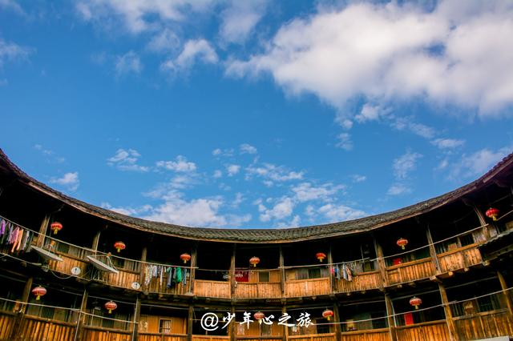
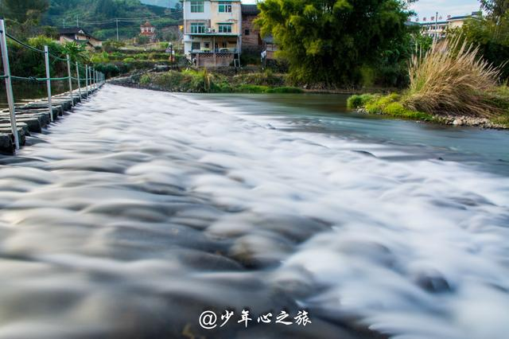
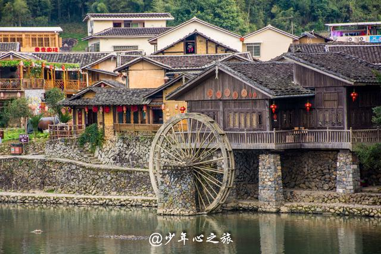
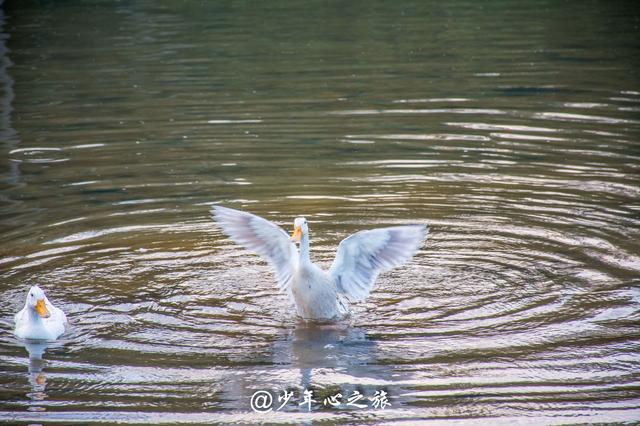
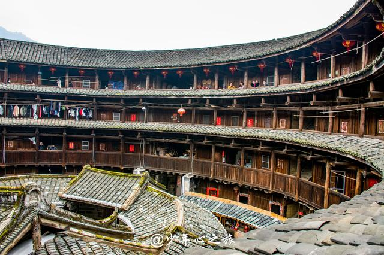
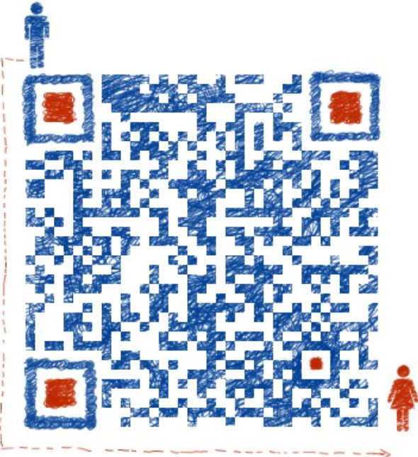

| Prefect Travrling | 首页 | 地区介绍 | 景区介绍 | ||||||||
| 《大鱼海棠》取景地超详攻略 |
| 2018-06-10 00:00 |
《大鱼海棠》取景地超详攻略，厦门的周末约起！ 这是云水谣古镇里边景点的分布图，景点非常集中，走路过去就行了，不像A线那边交通不方便。另外要进景区得先在售票处买票。 【门票】 1，云水谣古镇联票是90元一位，网上可以订，一般门票几天都可以用，住宿主要集中在景区里边，所以去住的地方都要先买票才给进。 2，田螺坑土楼群线路门票100元，需要到另外一个购票点购买。 【住宿】 一般都住云水谣景区里边，云水谣是走路都能到景点，所以基本不存在交通不便利问题。另外一条线则住宿比较少也很分散，也可以考虑住云水谣然后白天包车去逛田螺坑土楼景点。 【美食】 因为开发程度不大，所以云水谣基本没什么好吃的，吃饭地方主要集中在景区中心点。 【注意事项】 1，较好不要穿高跟鞋，因为云水谣古道都是由鹅卵石铺成的，高跟鞋不好走路，容易扭到。 2，夏天蚊子比较多，备万金油什么的。 3，玩水的时候注意安全。 4，云水谣的路比较窄，节假日开车可能会比较拥挤，停车也不方便。 5，云水谣适合慢游，较好还是在那边过一个晚上。 6，今年1月18号左右过去，冬季可以看到满园的油菜花，非常漂亮。这里四季如春，都适合旅游。 |
|  |
|  |
|  |
|  |
|  |
| 上一篇:崇武大岞一日游成半日游,风雨无情人有情 |
| 下一篇：去福建武夷山游玩，看这篇攻略就够 |
PREFECT TRAVLING |
 | 地址：江苏省苏州市张家港市福新路1号 电话：13601475824 邮箱：130638633@qq.com QQ： 1370638633 |